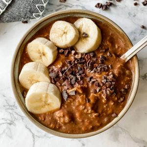

Chocolate Banana Oatmeal Porridge

Description
'Yummy, mummy!' is something you're bound to hear when you make this delicious breakfast treat. A simple oatmeal porridge with mashed bananas and melted chocolate make it extra special! You can add raisins and 1/4 teaspoon of cinnamon, depending on what your family likes.
Ingrediens
- 2 cups boiling water
- 1 cup rolled oats
- ¼ teaspoon salt
- ½ cup brown sugar
- 1 banana, mashed
- ¼ cup semisweet chocolate chips
Steps
- In a saucepan, combine water, oats and salt.
- Simmer 5 minutes uncovered, stirring occasionally.
- Remove from heat, cover, and let stand 3 minutes.
- Stir in brown sugar, banana and chocolate chips.